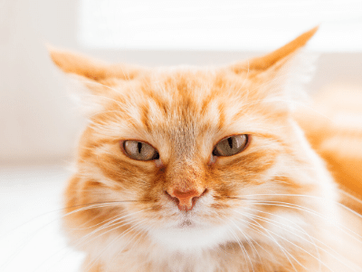
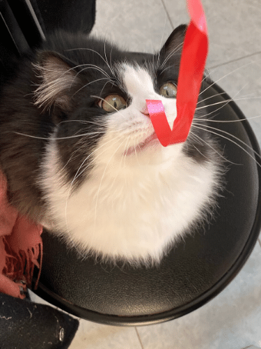
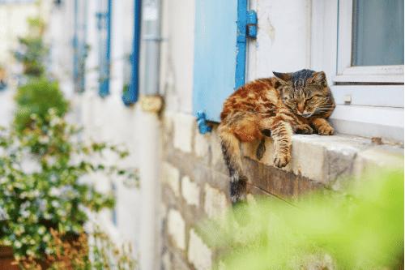
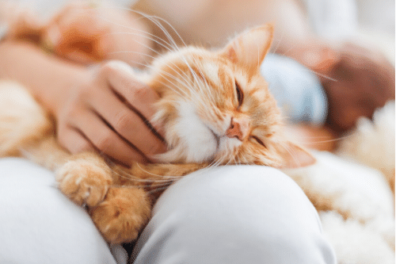

Soft, cute and cuddly meowing creatures that are curious and often mischievous..
These are the traits which make us want these cats to live in our homes.
Cats are irresistible to most of us because of their almond-shaped eyes, the range of fur colors, their
tiny noses and paws and the adorable and amusing things they do that never fail to amuse us.
Little Creatures with Amazingly Cute Eyes
Cats have some of the most remarkable eyes in the animal world:
Instead of having circular pupils like humans, the black sections in the centers of their eyes are
vertical - they can easily adjust and open and close like a camera aperture.

Full of Fun
Cats love to play, and they can engage in many activities — from batting a ball to exploring the
house
and all its dark corners. They love to climb and leap, and have an inbred sense of curiosity
that
sometimes gets them into hilarious situations. A cat will find mundane things like running water
in
the
kitchen sink or flashing light on a copy machine a wonder and will want to learn more! They are
usually
a bit mischievous and funny.

Cats + Slumber = Cuteness!
Cat cuties have an almost toddler-like appearance when asleep. They often sleep with their little
paws
tucked up to their chest and often sleep on their sides. Cats know how to relax and do show it!
They
snooze whenever they want to, even on a pool of sunshine on the floor or in a sunny windowsill.
You
see
the face of your cat sleeping and can't help but wonder what goes on in his sleep.

Faithful and Loyal
Any cat needs love , care, food , water, comfort and safety. You'll be amply rewarded with
loyalty
and
affection when you give these for your pet cat. Cats are affectionate to their owners and often
like
to
snuggle up at "lights out" with them on the pillow. They 're delighted to welcome you after a
hard
day
at work, and are always able to de-stress you with their special attention. Relaxing and
stroking
your
purring pal help the day's stress to drain away. The emotional bond that you have with your cat
makes it
much more than just a pet — your cat can become a vital part of your family, enhancing your
feelings
of
well-being. Nurturing your cat is an act of love your adorably cute kitty would give back!

How Cats Became So Adorable
Many people believe that cats may have evoled to be more adorable as they became domesticated to make
people want to take better care of them. For hundreds of years human beings have lived alongside cats.
We're used to thinking of them as cute at this stage, even of those who are less baby-faced. A British
anthrozoologist John Bradshaw, even said that cats' "unexpressive faces" may have made people want to
protect them even more.
Cats are adorable because us people decided they are adorable.